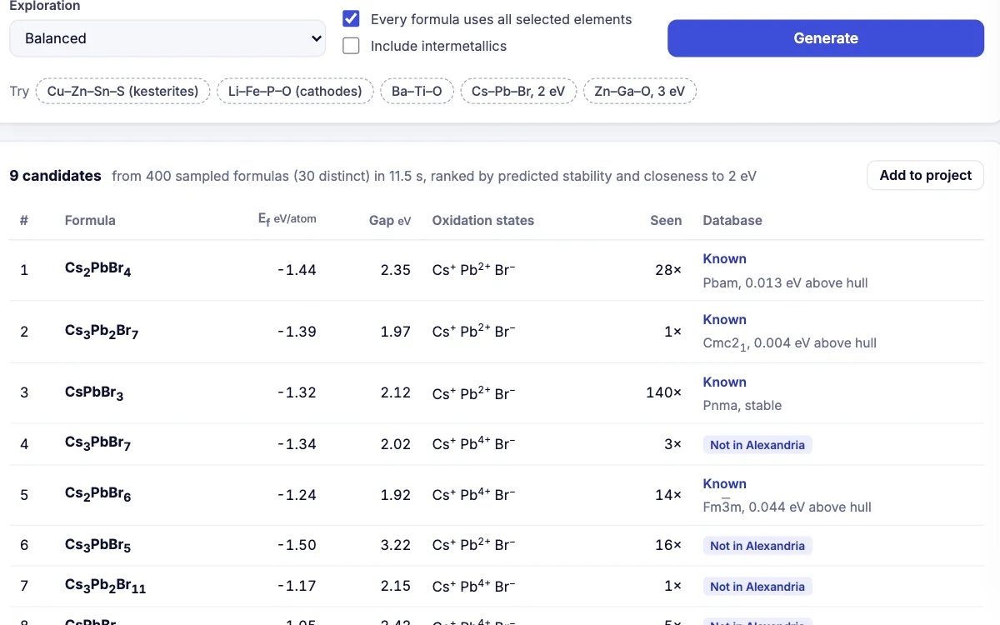

Ionic conductivity
Fit σ(T) with Arrhenius or Vogel–Fulcher–Tammann models across replicate cells, and report the activation energy.
- Eₐ in eV with a 95% CI
- VFT for polymer electrolytes
Fit ionic conductivity across temperature, confirm phase purity by XRD, and explore new compositions in a chemical system before you synthesise them.

Each workflow opens with your data in the browser. Nothing is uploaded, and every result comes with its figure and methods text.
Fit σ(T) with Arrhenius or Vogel–Fulcher–Tammann models across replicate cells, and report the activation energy.
Check a synthesised cathode or electrolyte against every computed structure of its elements, and spot impurity peaks.
Lattent’s generative model proposes charge-balanced compositions in, for example, Li–Fe–P–O, and predicts their stability.
Look up formation energy, distance to the convex hull and band gap for known electrode and electrolyte phases, with a simulated XRD pattern.
Built into the curve-fitting engine and checked against SciPy, alongside 30 more and any equation you type yourself.
Free, in your browser, with nothing to install.
Other fields: NanomaterialsCatalysisPolymersSemiconductors and opticsElectrochemistryCeramics and alloysAnalytical chemistry